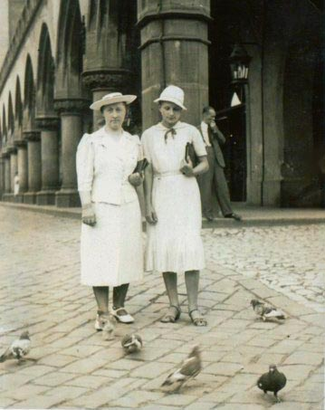
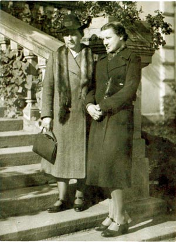
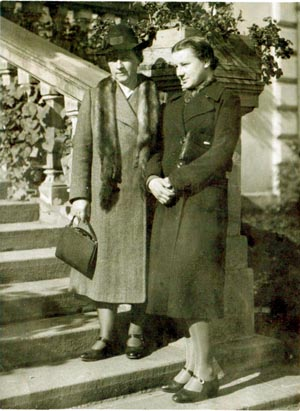
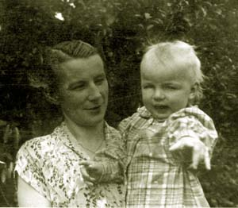
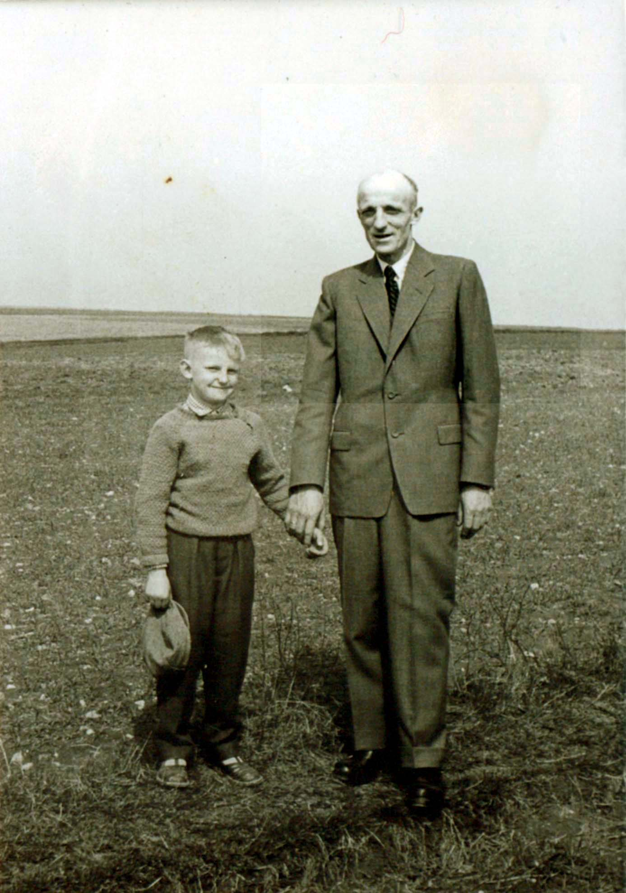
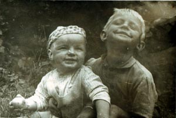

Zofia w dzieciństwie.
Zofia z ciotką Stefanią w Krakowie.
 

Zofia z ciotką Stefanią w Krakowie.

Zofia z synkiem Wacławem
Zofia Sawicka urodziła się w Małusach 18.02.1923 roku. Tam, w miejscowym dworze, jej ojciec był gorzelanym. W latach 40. ukończyła liceum nauczycielskie w Kielcach, a następnie Studium Nauczycielskie w Częstochowie.
W grudniu 1949 roku poślubiła Józefa Kowalika (spokrewnionego przez rodzinę Lechów). Śluby cywilny i kościelny odbyły się w Szydłowie. Józef urodził się w 1916 roku w Gackach. Jego rodzicami byli: Genowefa Lechówna i Jan Kowalik, nauczciel.
Z zawodu Józef był ekonomistą. Pracował jako główny księgowy w Gminnej Spółdzielni w Szydłowie oraz główny księgowy w Kółku Rolniczym w Gackach, a poza tym był współwłaścicielem gospodarstwa, które prowadził wraz z żoną.

Józef Kowalik z synem Janem.

Jan i Wacław.